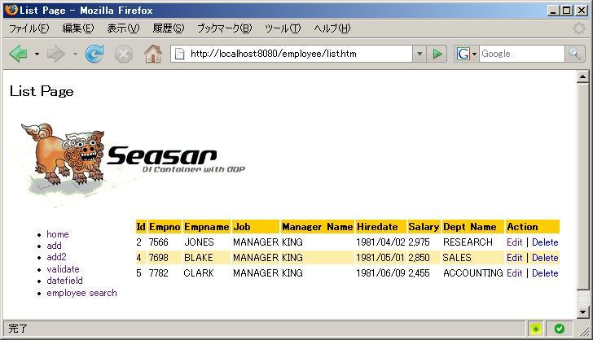

-

- Search画面で入力された検索条件に合致したRecordをTableで一覧表示します。なお現在はすべての項目が空白の場合全件検索になっていますが、実際の業務画面では、この場合 Errorにするかあるいは、件数を絞って表示する様な機能の追加が必要です。
- 今回は、Seasar ProjectのDBFluteを使用して、Dataの読み込みを行っています。
- 全ソースリストは、以下の通りです。
public class ListPage extends BorderPage {
public Table table = new Table();
private EmployeeBhv employeeBhv;
private EmployeeSearchDto employeeSearchDto;
public ActionLink editLink = new ActionLink("edit", "Edit", this, "onEditClick");
public ActionLink deleteLink = new ActionLink("delete", "Delete", this, "onDeleteClick");
public ListPage() {
table.addColumn(new Column("id"));
table.addColumn(new Column("empno"));
table.addColumn(new Column("empname"));
table.addColumn(new Column("job"));
table.addColumn(new Column("managerName"));
Column column = new Column("hiredate");
column.setFormat("{0,date,medium}");
table.addColumn(column);
column = new Column("salary");
column.setFormat("{0,number,#,###}");
table.addColumn(column);
table.addColumn(new Column("deptName"));
column = new Column("Action");
ActionLink[] links = new ActionLink[]{editLink, deleteLink};
column.setDecorator(new LinkDecorator(table, links, "id"));
table.addColumn(column);
deleteLink.setAttribute("onclick", "return window.confirm('削除していいですか');");
}
public void onInit() {
employeeSearchDto =
(EmployeeSearchDto) getContext().getSession().getAttribute("employeeSearchDto");
}
public void onRender() {
if (employeeSearchDto!=null){
List employees =
employeeBhv.getMyDao().searchEmployeeDtoList(employeeSearchDto);
table.setRowList(employees);
}
}
public boolean onEditClick() {
Integer id = editLink.getValueInteger();
setRedirect(getContext().getPagePath(EditPage.class) + "?mode=edit&id="+id.toString());
return false;
}
public boolean onDeleteClick() {
Integer id = deleteLink.getValueInteger();
Employee emp = employeeBhv.getMyDao().getEntity(new BigDecimal(id));
try {
employeeBhv.getMyDao().delete(emp);
}
catch (Exception e) {
//TO-DO Errorの表示が必要
//setError("Delete Error 最初からやり直して下さい");
return true;
}
return true;
}
public void setEmployeeBhv(EmployeeBhv employeeBhv) {
this.employeeBhv = employeeBhv;
}
}
|